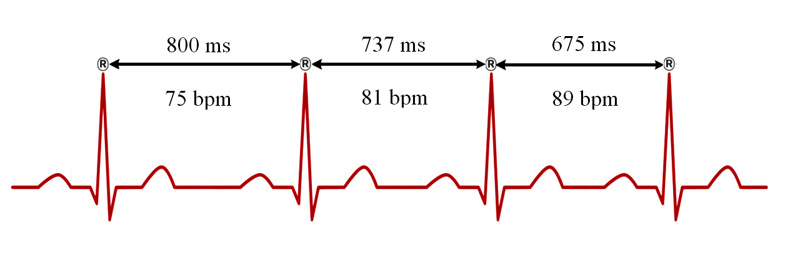

Nhịp tim nghỉ có thể được ghi khi bạn ngồi yên hoặc được thiết bị ước tính từ dữ liệu trong lúc ngủ. Mỗi hãng sử dụng khoảng thời gian và phương pháp riêng; kết quả ban đêm không nhất thiết chỉ được lấy từ giấc ngủ sâu.
Nhịp tim thường thấp hơn khi ngủ, nhưng cách tính nhịp tim nghỉ khác nhau giữa các hãng. Nhiệt độ, thuốc, bệnh, rượu và vận động đều có thể ảnh hưởng. Một đường nhịp tim không đủ để xác định cơ thể đang tiêu hóa hay đã phục hồi xong.
Tình huống minh họa: Sau một ngày nóng, bữa tối muộn và ngủ không đều, mạch đêm cao hơn nền. Có nhiều yếu tố có thể cùng giải thích, nên không chọn ngay một kết luận như nhiễm bệnh hay quá sức. Kiểm tra cách đeo, ghi hoàn cảnh và đối chiếu triệu chứng; nếu thay đổi kéo dài, mang cả diễn biến khi trao đổi y tế.
Nhịp tim, thể tích nhát bóp và giới hạn suy luận
Một nhịp tim là một lần co bóp, nhưng lượng máu bơm đi còn phụ thuộc thể tích nhát bóp. Ở mức khái quát, cung lượng tim = nhịp tim × thể tích nhát bóp. Đây là lý do hai người có thể cần nhịp tim khác nhau để đáp ứng cùng một nhu cầu tuần hoàn. Tập bền có thể góp phần tạo những thích nghi tim mạch, nhưng không thể suy trực tiếp kích thước tim hay thể tích mỗi nhát bóp từ một số mạch trên cổ tay.

Nhịp tim còn thay đổi do tư thế, nhiệt, sốt, cảm xúc và thuốc. Mạch thấp ở người tập luyện không được hiểu giống mạch thấp mới xuất hiện kèm choáng. Ngược lại, một lần mạch cao sau vận động hoặc khi lo lắng không tự xác định bệnh. Phạm vi thường được nêu cho người lớn lúc thức và nghỉ không phải mục tiêu bắt buộc trong mọi giai đoạn ngủ.
Khi xem biểu đồ ban đêm, nên hỏi cách thiết bị định nghĩa “nhịp tim nghỉ”: trung bình, giá trị thấp hoặc một cửa sổ cụ thể. Một hình võng hay đường giảm dần chỉ là mô tả của đường cong; nó không cho biết chính xác lúc nào gan ngừng chuyển hóa hoặc lúc nào cơ thể hoàn tất sửa chữa.
Một phép tính minh họa, không phải cách suy tim khỏe từ đồng hồ
Nếu dùng các số giả định 70 nhịp/phút và 70 mL mỗi nhát bóp, cung lượng theo phép nhân là 70 × 70 = 4900 mL/phút. Hai thành phần có thể thay đổi, nên chỉ biết nhịp 70 chưa cho biết kết quả còn lại. Đồng hồ ghi mạch cũng không đồng thời đo thể tích nhát bóp bằng phép nhân này.
Phân biệt như vậy giúp tránh ngộ nhận “mạch càng thấp thì tim chắc chắn càng khỏe”. Mạch chịu cả nhu cầu hoạt động và điều hòa, trong khi khả năng đáp ứng tuần hoàn cần bối cảnh rộng hơn. Với triệu chứng, câu hỏi quan trọng là điều gì đang thay đổi và ảnh hưởng ra sao, không phải liệu số của bạn có thấp hơn người khác. 1 2 3
Đọc biến động HRV như một tín hiệu cần giải thích
HRV chịu ảnh hưởng của hoạt động thần kinh tự chủ, hô hấp và nhiều yếu tố khác. Các yếu tố như giấc ngủ, bệnh, thuốc, lịch tập và chu kỳ có thể thay đổi cùng lúc. Một số thấp không chỉ ra được nguyên nhân duy nhất; một số cao cũng không bảo đảm cơ thể đang ở trạng thái tốt nhất.
Để đọc có ích, hãy đi từ chất lượng phép đo → nền cá nhân → triệu chứng → bối cảnh. Nếu dây đeo lỏng hoặc tín hiệu gián đoạn, cần giải quyết vấn đề đo trước. Nếu nhiều đêm cùng lệch nền, hãy xem điều gì mới thay đổi. Sau đó mới cân nhắc điều chỉnh tải tập hoặc tìm tư vấn, thay vì đặt ra một ngưỡng mili giây dùng cho mọi người.
Ví dụ, HRV giảm sau một đêm thức muộn có thể phù hợp với bối cảnh thiếu ngủ, nhưng chưa chứng minh cortisol tăng hay bạn bị nhiễm trùng. Ngược lại, cảm thấy yếu rõ hoặc có hồi hộp vẫn đáng quan tâm dù ứng dụng báo xanh. Không dùng việc điều khiển nhịp thở để làm HRV tăng ngay trong phép đo như bằng chứng chương trình tập đã cải thiện sức khỏe lâu dài. 4 5 1
Lactate, đau cơ muộn và phục hồi không phải cùng một việc
Sau một buổi tập, nhiều quá trình diễn ra đồng thời: điều chỉnh tuần hoàn, sử dụng và tái tạo nhiên liệu, đáp ứng mô cơ, ngủ và cảm giác mệt. Vì vậy, một biện pháp làm bạn thấy dễ chịu ngay không tự chứng minh đã tăng tốc mọi phần phục hồi. “Cảm thấy đỡ” và “sẵn sàng lặp lại buổi nặng” là hai kết quả khác nhau.
Lactate là một phần của chuyển hóa và có thể được dùng làm nhiên liệu; nó không phải chất độc nằm lại trong cơ nhiều ngày gây đau cơ muộn. Vận động nhẹ có thể thúc đẩy xử lý lactate trong một số bối cảnh, nhưng điều đó không đủ để kết luận sẽ giảm đau cơ ngày hôm sau hoặc sửa chữa mô nhanh hơn.
Phục hồi chủ động phù hợp khi mức vận động thật sự nhẹ và bạn thấy dễ chịu. Nếu biến ngày nghỉ thành một buổi cardio để tăng điểm app, bạn đã tạo thêm tải. Ngược lại, nghỉ hoàn toàn có thể phù hợp khi đang bệnh, rất mệt hoặc cần bảo vệ chấn thương. Chọn phương án dựa trên triệu chứng và kế hoạch chung, thay vì xem một bên luôn vượt trội. 6 2
Từ phương trình Fick đến phép ước tính trên đồng hồ
Khả năng sử dụng oxy tối đa phụ thuộc hệ vận chuyển oxy và khả năng mô lấy oxy khỏi máu. Nguyên lý Fick diễn đạt quan hệ giữa tiêu thụ oxy, cung lượng tim và chênh lệch oxy động–tĩnh mạch. Nó giúp hiểu vì sao tim, tuần hoàn và cơ đều tham gia thể lực tim phổi; không có nghĩa đồng hồ đã đo riêng từng thành phần đó.
Trong kiểm tra gắng sức có đo trao đổi khí, thiết bị phân tích khí hít vào và thở ra khi công việc tăng dần. Trong đời thường, đồng hồ thường phải ước tính từ nhịp tim kết hợp tốc độ, vận động hoặc những thông tin khác mà thuật toán hỗ trợ. Tên gọi cùng là VO2 max nhưng hai quy trình không tương đương.
Thể lực tim phổi thấp có liên hệ với nguy cơ sức khỏe, nên theo dõi xu hướng có giá trị. Tuy nhiên, liên hệ ở một quần thể không trở thành lời hứa bạn sẽ sống thêm một số năm nếu điểm tăng. Sai số cảm biến, điều kiện trời nóng, dữ liệu cân nặng và loại buổi tập có thể ảnh hưởng ước tính. Khi có sự sụt khả năng vận động thực sự, triệu chứng cần được đánh giá ngay cả khi điểm chưa thay đổi.
VO2 tuyệt đối và tương đối: cùng khả năng nhưng đơn vị khác
Kết quả có thể biểu diễn bằng lít oxy mỗi phút hoặc bằng mL mỗi kg mỗi phút. Ví dụ giả định một phép đo là 3,5 L/phút và khối lượng 70 kg: 3500 / 70 = 50 mL/kg/phút. Đó là đổi đơn vị và chuẩn hóa theo khối lượng, không phải hai lần đo khác nhau.
Nếu thông tin cân nặng nhập thay đổi, giá trị tương đối có thể đổi dù lượng oxy tuyệt đối không đổi. Trong thực tế, thay đổi cân nặng và huấn luyện còn có những tác động khác, nên không dùng ví dụ này để khuyên giảm cân chỉ nhằm tăng điểm. Nó giúp đọc đúng mẫu số và hỏi liệu một thay đổi đang phản ánh thể lực, thông tin đầu vào hay cả hai. 3 7
Bảng đối chiếu để đọc đúng thông tin
| Tình huống | Có thể ảnh hưởng mạch | Cách tiếp cận |
|---|---|---|
| Nóng, vận động, thay tư thế | Nhu cầu tuần hoàn thay đổi | Ghi hoàn cảnh và đo lại khi phù hợp |
| Thuốc hoặc nền tập luyện | Có thể làm nền cá nhân khác | Không so theo một chuẩn duy nhất |
| Thay đổi kéo dài không rõ lý do | Cần xem thêm nguyên nhân | Trao đổi diễn biến và triệu chứng |
| Đau ngực, khó thở, ngất | Không chỉ là vấn đề điểm số | Tìm chăm sóc y tế khẩn khi phù hợp |
Ứng dụng thực tế: làm gì và đánh giá bằng cách nào?
Theo dõi nền qua nhiều đêm và ghi các yếu tố thay đổi. Nếu kết quả bất thường, kiểm tra cách đeo và đo mạch lúc nghỉ khi thức. Kết hợp cảm giác cơ thể trước khi quyết định tập luyện.
- Kiểm tra bạn đang xem gì. Xác định tên chỉ số, cách thiết bị lấy mẫu và điều kiện đo trước khi so sánh.
- Đặt cạnh bối cảnh. Ghi giấc ngủ, vận động, bệnh gần đây, thuốc và cảm giác; nhiều yếu tố có thể thay đổi cùng lúc.
- Chọn phản ứng phù hợp. Điều chỉnh để hỗ trợ sức khỏe hoặc sự dễ chịu, không để ép một đường cong đạt mục tiêu.
- Xem diễn biến. Mẫu nhiều lần đo hữu ích hơn một điểm đơn lẻ, nhưng triệu chứng mới hoặc nặng không cần chờ đủ số ngày mới được đánh giá.
Khi nào nên tìm hỗ trợ?
Khoảng 60–100 nhịp/phút thường dùng cho người lớn lúc thức và nghỉ, không phải mục tiêu bắt buộc khi ngủ. Người tập bền hoặc dùng thuốc có thể có mạch thấp hơn.
Mạch đột ngột rất khác nền kèm đau ngực, khó thở hoặc ngất cần cấp cứu. Thay đổi kéo dài cần được khám.
Nguồn tham khảo và phạm vi hỗ trợ
-
American Heart Association — All About Heart Rate — Professional patient guidance. Hỗ trợ: Nhịp tim nghỉ, yếu tố ảnh hưởng và triệu chứng cần khám.
-
Kellmann et al. (2018) — Recovery and Performance in Sport: Consensus Statement — Consensus statement. Hỗ trợ: Phục hồi cần cá nhân hóa, gồm tải tập và áp lực cuộc sống.
-
Ross et al. (2016) — Importance of Assessing Cardiorespiratory Fitness in Clinical Practice — AHA scientific statement. Hỗ trợ: Thể lực tim phổi và đánh giá nguy cơ sức khỏe.
-
Shaffer & Ginsberg (2017) — An Overview of Heart Rate Variability Metrics and Norms — Narrative review. Hỗ trợ: Chỉ số HRV, bối cảnh đo và giới hạn so sánh.
-
Draghici & Taylor (2016) — The physiological basis and measurement of heart rate variability in humans — Physiology review. Hỗ trợ: Cơ chế và giới hạn diễn giải HRV.
-
Van Hooren & Peake (2018) — Do We Need a Cool-Down After Exercise? — Narrative review. Hỗ trợ: Hạn chế bằng chứng về giảm đau cơ và phục hồi nhờ hạ nhiệt chủ động.
-
WHO — Physical activity — Public health guideline summary. Hỗ trợ: Khuyến nghị vận động theo nhóm đối tượng.
Cập nhật nội dung và nguồn: 26/10/2026. Nội dung giáo dục; chưa có xác nhận duyệt bởi bác sĩ.